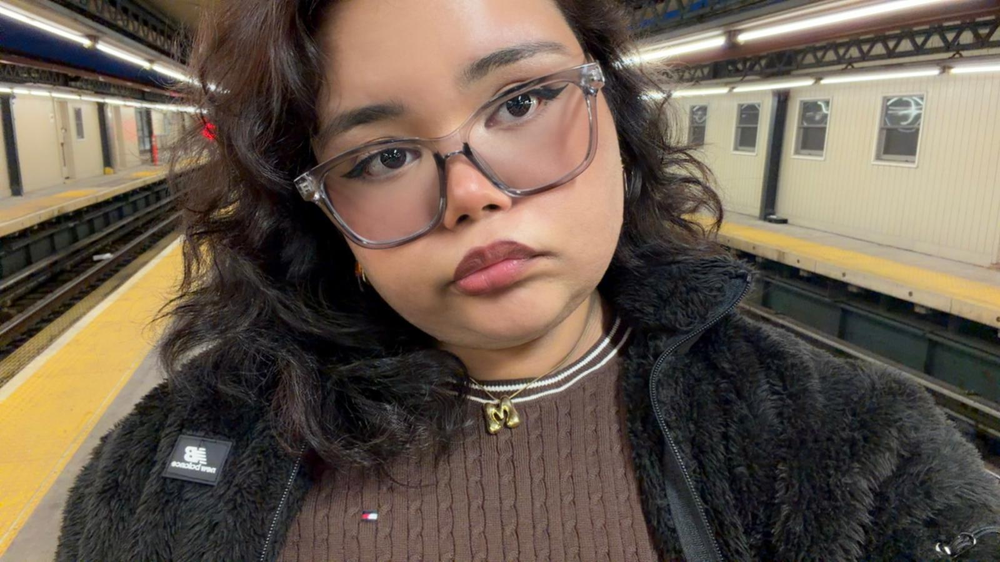

~ CREATIVE STATEMENT ~
Hello! My name is Maleha Nawshin, and I am interested in visual storytelling through photography, graphic design, and digital media.
I enjoy creating images and designs that make people think and feel, using colors, shapes, and layered visuals to tell a story.
I like to explore themes like identity, memory, and how social media changes the way we see ourselves and the world
I enjoy experimenting with different tools, combining photography, design, and digital effects to create work that is interesting and meaningful.
My goal is to make designs and images that are both visually appealing and thought-provoking.
I want people to look at my work and feel something whether it’s curiosity, reflection, or surprise.